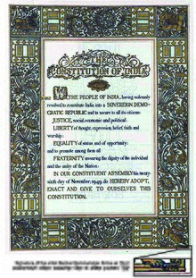

Constitution of India

The Constitution of India is the supreme law of India.[2][3] The document lays down the
framework that
demarcates fundamental political code, structure, procedures, powers, and duties of government institutions
and sets out fundamental rights, directive principles, and the duties of citizens, based on the proposal
suggested by M.N. Roy. It is the longest written national constitution in the world.
Background
With the exception of scattered French and Portuguese exclaves, India was under the
British rule from 1858
to 1947. From 1947 to 1950, the same legislation continued to be implemented as India was a dominion of
United Kingdom for these three years, as each princely state was convinced by Sardar Patel and V. P.
Menon
to sign the articles of integration with India, and the British Government continued to be responsible
for
the external security of the country.[15] Thus, the constitution of India repealed the Indian
Independence
Act 1947 and Government of India Act 1935 when it became effective on 26 January 1950. India ceased to
be a
dominion of the British Crown and became a sovereign, democratic republic with the constitution.
Articles 5,
6, 7, 8, 9, 60, 324, 366, 367, 379, 380, 388, 391, 392, 393, and 394 of the constitution came into force
on
26 November 1949, and the remaining articles became effective on 26 January 1950 which is celebrated
every
year in India as Republic Day.
Previous legislation
The constitution was drawn from a number of sources. Mindful of India's needs and
conditions,
its framers
borrowed features of previous legislation such as the Government of India Act 1858, the Indian Councils
Acts
of 1861, 1892 and 1909, the Government of India Acts 1919 and 1935, and the Indian Independence Act
1947.